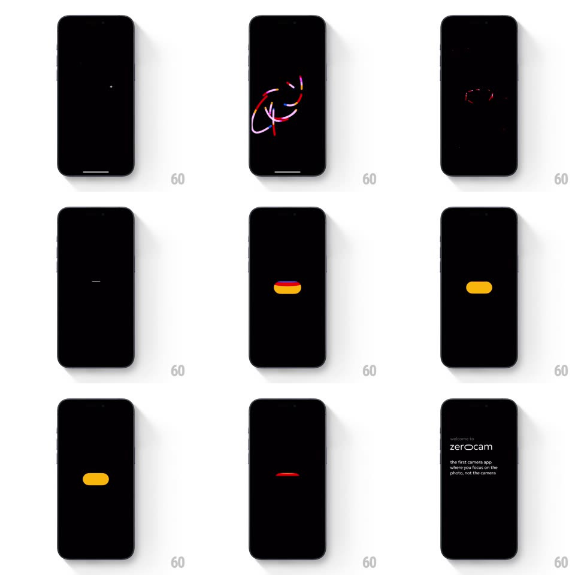

Media
Frame-by-frame

Rebuild this interaction 1:1: Zerocam's splash - sparks gather into an abstract neon-line scribble that collapses into a glowing orb, morphs into a solid yellow pill, then fades out to the onboarding text.

Rebuild this interaction 1:1: Zerocam's splash - sparks gather into an abstract neon-line scribble that collapses into a glowing orb, morphs into a solid yellow pill, then fades out to the onboarding text.
## Integration
Integration: stack-agnostic spec - springs given as stiffness/damping, timed motions as duration + curve; map every value to your framework and animation library of choice.
## Scene
Pure black. Two tiny sparks appear; a scribble of neon lines (red, cyan, white) orbits and tangles at center; the scribble winds down into a small bright orb; the orb stretches into a solid yellow pill with a red trailing edge; the pill holds, then fades as "zerocam" and the tagline ("the first camera app where you focus on the photo, not the camera") appear.
## Motion spec
Pattern: scribble-to-pill metamorphosis.
- Sparks: two points of light blink in (100ms) and trace short curved paths, each leaving a fading neon trail (red and cyan, 400ms decay).
- The scribble: the trails multiply into 4-6 orbiting strokes that weave an abstract knot (1s, continuous bezier motion, trails at 60% opacity) - energetic but centered, never touching edges.
- Collapse: the strokes spiral inward (200ms, ease-in) into a single white-hot orb (glow radius 20px) with a soft flash (screen brightens 8%, 100ms).
- Morph: the orb stretches horizontally into the yellow pill (width 12 to 64px, height 12 to 28px, spring ~340/18, 400ms), its color washing white to yellow with a red edge that lingers 150ms on the trailing side.
- The pill holds 800ms with a faint breathing glow (glow +-3px, 2s), then fades (300ms) as the wordmark and tagline fade up (opacity + translateY 6px, 350ms, staggered 100ms).
## Calibration
- Neon means saturated red/cyan on black with additive blending - overlapping strokes brighten, never muddy.
- The whole sequence is under 3s; the pill is the only solid shape until the text.
## Reduced motion
Skip scribble; orb fades into pill, pill into text.
## Don't miss
- The scribble is abstract - it must NOT resolve into a logo or letters; the pill is the destination.
- The red trailing edge on the pill is the memory of the scribble - keep it brief and one-sided.